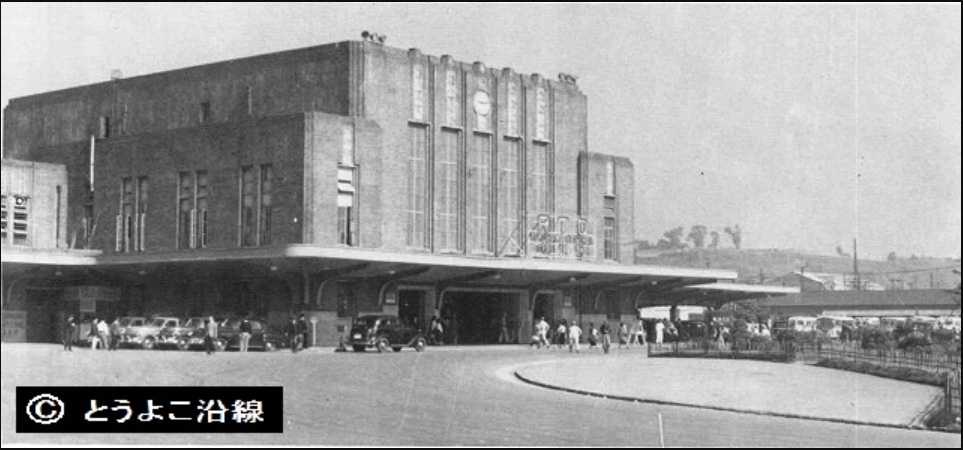

横浜のシルバー世代にインタビュー
- なぜ横浜に住んでいるのでしょうか？
横浜から離れたいと思ったことはありますか？
- どこで夫/妻に会いましたか？(学校？バーとか？)
子供はいますか？
⇒IF YES
横浜で子育てをするにあたって大変だったことはなんですか？
- 横浜には沢山観光客がいますが、観光客のことはどう思いますか？
その影響はなんですか？
外国語を習おうとしましたか？
- 横浜といえばこの料理という料理はありますか？
- 横浜での一番の思い出はなんですか？
- ４０年前のお勧めの場所はどこですか？現在のお勧めの場所はどこですか？
- 横浜のことで知ってほしいことなどありますか？
- 横浜はあなたが小さいときと較べて改善したと思いますか？
どう改善しましたか？
- 最初の横浜での仕事はなんですか？
- 横浜を思い出させる場所はありますか？（似たような場所）
そこに移りたいとは思いませんか？
